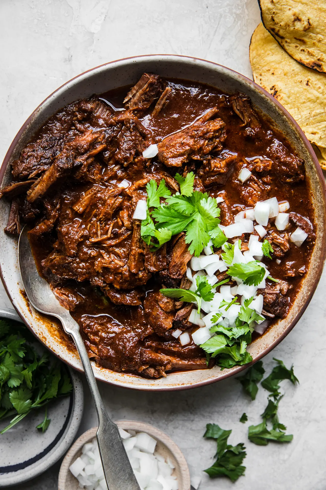

Birria Recipe

Description
Birria has become popular within the past couple of years in the United States, but it is a staple dish in Mexican cuisine. Usually served as either beef or goat soup, birria finds its popularity as a taco dish.
Today, we will learn how to make the beef version of birria that you can enjoy as a soup or prepare on your own as a taco dish.
Ingredients
- Chile Guajillo
- Chile Ancho
- Beef Brisket
- Salt
- Black Pepper
- Tomatoes
- Cumin
Steps
- De-vein 5 chile guajillo and 5 chile ancho.
- Cut 6 tomatoes in fourths.
- Put the chiles and tomatoes in a blender with water and blend until it is fully broken down.
- Put the tomato and chile paste in a pot on high heat. Wait 5 minutes for it to start boiling.
- Once it starts boiling, lower the heat to a medium and put the beef brisket in the pot. Then put a tablespoon of salt, tablespoon and black pepper and a tablespoon of cumin in the pot.
- Beef will take about 5 hours to fully cook. Once fully cooked, your soup or possible taco ingredient should be ready to eat!